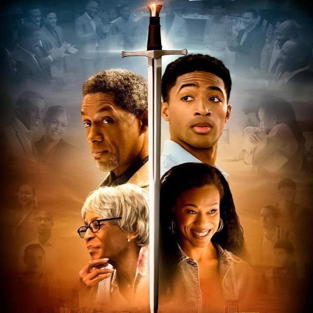

Top 5 Best Christian Movies & Series Of All Time
This is according to what i have watched.
- House of David : This is a series about David and his life story this is based on the scriptures and it's biblical. See More
- The Chosen : This is a series about Jesus and his entire work on earth. This series adds more drama on the stories in the scriptures,everthing is based on the Holy Bible. See More

- The Forge : This is a inspiring movie that portrays the goodness of God in the life of a gentleman called Phil. See More
- Letters to God : This a sensational movie that talks about a young boy fighting cancer writes letters to God, touching lives in his neighborhood and community and inspiring hope among everyone he encounters. See More

- War room :This is a powerful the family-friendly film examines the transformative power of prayer in the Jordan family's lives. See More